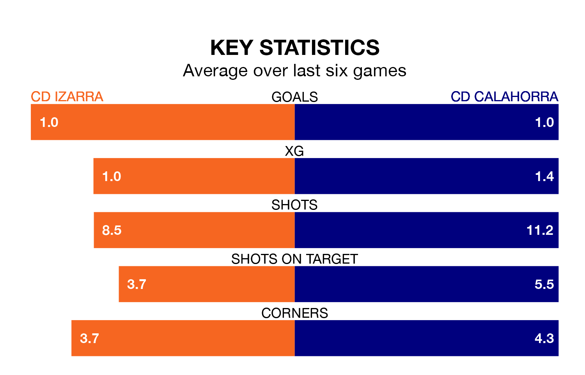

CD Izarra host CD Calahorra on Sunday at the Estadio Merkatondoa in the Segunda División RFEF Group 2.
In their last league match, on April 7, Izarra lost to Barakaldo CF 2-0 away.
Calahorra won, 1-0 at home against UD Barbastro, with Julen Ekiza Hervás scoring their goals.
In the last 10 years, Izarra and Calahorra have played each other on seven occasions. Calahorra won six of them and they drew once.
On average, Izarra scored 0.3 goals and Calahorra 1.4 in those matches.
Their last meeting was on December 3, when Calahorra won 2-1 at home.
Izarra are 14th in the table after 30 games, of which they have won eight and drawn six, earning 30 points.
Calahorra are six places ahead of the hosts in eighth, with 11 wins and seven draws putting them on 40 points.
With 26 goals in 30 games so far this season, Izarra are scoring at below the league average rate with 0.9 goals per game. And they are conceding more than average, letting in 44 goals at a rate of 1.5 per game.
The away team are also below average scorers, with 0.9 goals per game, compared to a league average of 1.1. They have conceded 1.0 goal per game.
Izarra are in mixed form in the Segunda División RFEF Group 2, with three wins and three losses from their last six games.
And also with three wins and three losses over that period, Calahorra's form is identical – they have both taken nine points from 18.
Updated: 10:01 (UTC), 12/04/24